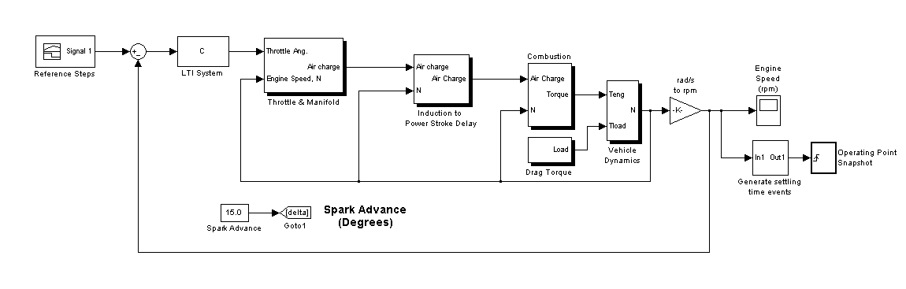
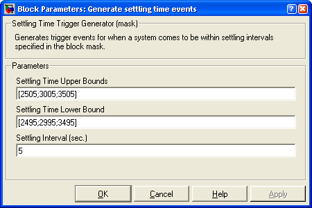
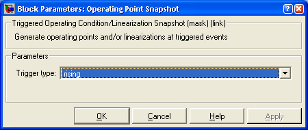
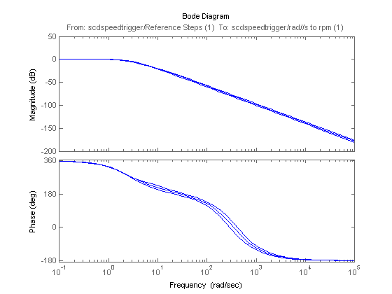
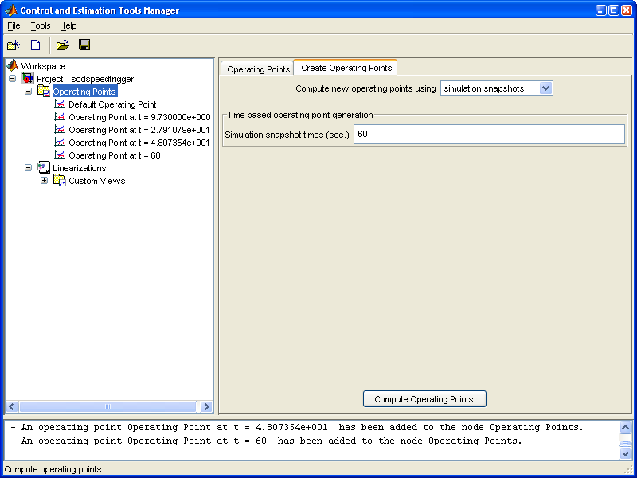

This demonstration introduces the generation of operating points using triggered snapshots. The model can be opened using the command:
scdspeedtrigger
In this example the model will be linearized at steady state operating points of 2500, 3000, and 3500 RPM. To get these operating points, simulation is used to generate operating point snapshots of the steady state conditions. Since the exact time a system reaches a steady state value is not always known, blocks such as the subsystem - Generate settling time events can be built to generate settling events. The block in this example sends rising edge trigger signals when a model is near a settling condition. The mask shown below allows for multiple settling conditions to be entered. In this example the block is configured to fire the rising edge triggers when the engine speed settles near 2500, 3000, and 3500 RPM for a minimum of 5 seconds.
The output settling time events are then fed to an Operating Point Snapshot block. In this example, the block creates operating point snapshots in the event of a rising edge trigger.
Using the FINDOP command, the simulation is run for 60 seconds and returns the operating points when engine speed is near steady state.
op = findop('scdspeedtrigger',60);
The first operating point is near the 2500 RPM (252.8 rad/s) settling condition.
op(1)
Operating Point for the Model scdspeedtrigger.
(Time-Varying Components Evaluated at time t=9.730000e+000)
States:
----------
(1.) scdspeedtrigger/LTI System/Internal
x: 144
(2.) scdspeedtrigger/Throttle & Manifold/Intake Manifold/p0 = 0.543 bar
x: 0.511
(3.) scdspeedtrigger/Vehicle Dynamics/w = T//J w0 = 209 rad//s
x: 262
Inputs: None
The second operating point is near the 3000 RPM (314.16 rad/s) settling condition.
op(2)
Operating Point for the Model scdspeedtrigger.
(Time-Varying Components Evaluated at time t=2.791080e+001)
States:
----------
(1.) scdspeedtrigger/LTI System/Internal
x: 164
(2.) scdspeedtrigger/Throttle & Manifold/Intake Manifold/p0 = 0.543 bar
x: 0.49
(3.) scdspeedtrigger/Vehicle Dynamics/w = T//J w0 = 209 rad//s
x: 314
Inputs: None
The third operating point is near the 3500 RPM (366.52 rad/s) settling condition.
op(3)
Operating Point for the Model scdspeedtrigger.
(Time-Varying Components Evaluated at time t=4.807355e+001)
States:
----------
(1.) scdspeedtrigger/LTI System/Internal
x: 184
(2.) scdspeedtrigger/Throttle & Manifold/Intake Manifold/p0 = 0.543 bar
x: 0.478
(3.) scdspeedtrigger/Vehicle Dynamics/w = T//J w0 = 209 rad//s
x: 367
Inputs: None
The operating points are used for linearization. First specify the input and output points using the commands:
io(1) = linio('scdspeedtrigger/Reference Steps',1,'in'); io(2) = linio('scdspeedtrigger/rad//s to rpm',1,'out');
Linearize the model and plot the Bode plot for each of the closed loop transfer functions.
sys = linearize('scdspeedtrigger',op(1:3),io);
bode(sys)

The operating points in the example above can be recalculated in the Control and Estimation Tools Manager GUI. The operating point snapshots are generated in the node Operating Points as shown in the image below.
